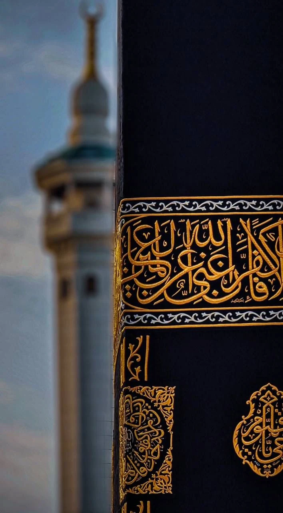
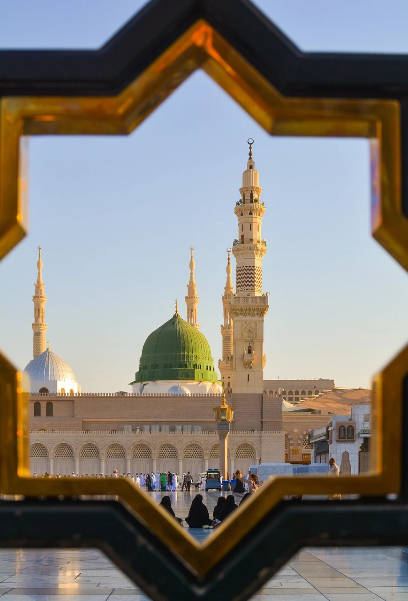
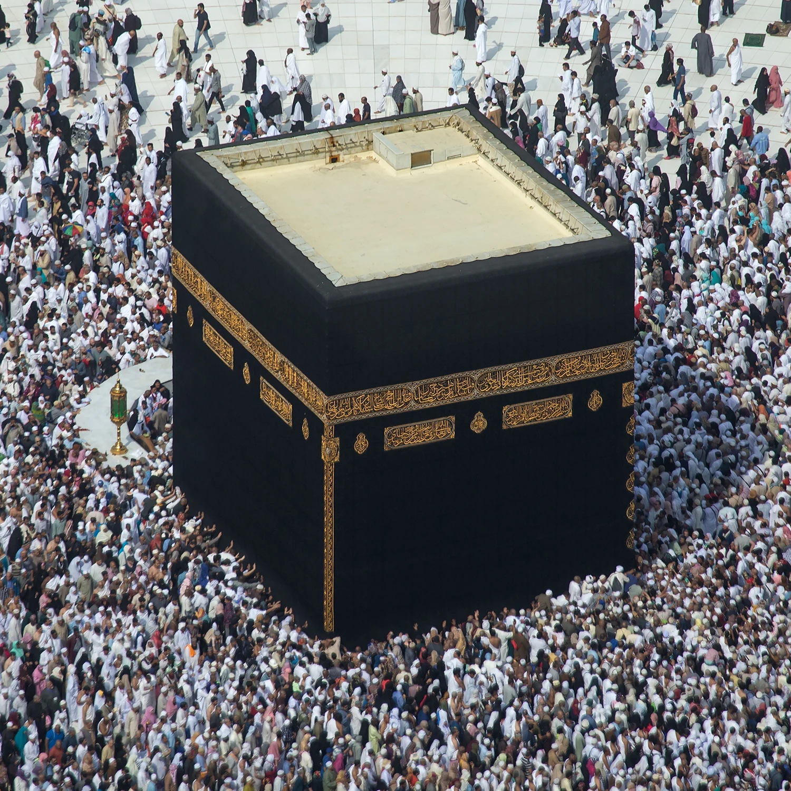
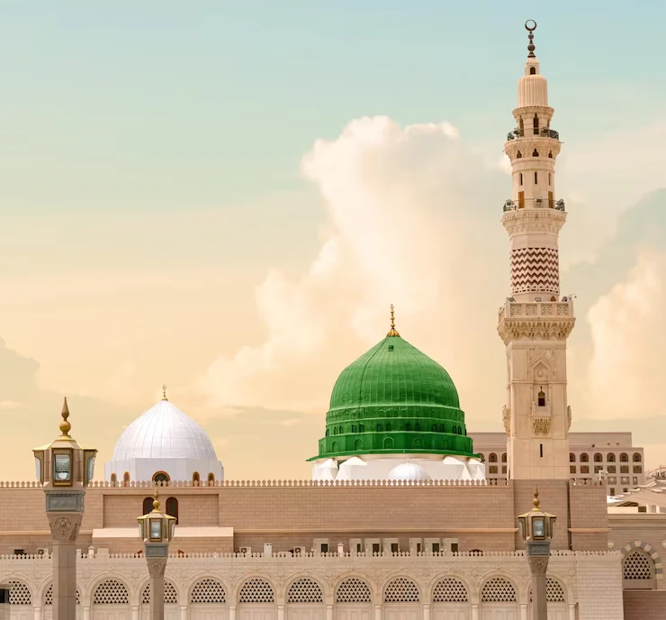
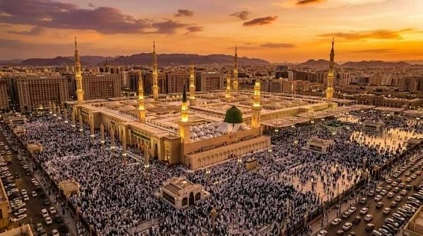
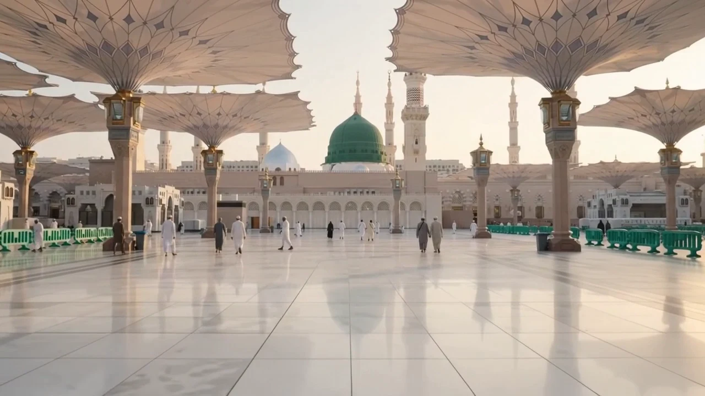

A BEAUTIFUL BEGINNING07DAYSThe Essential
01A focused sacred escape, with the essentials thoughtfully arranged.
MakkahMadinah
- Hotel options to suit your budget
- Airport & intercity transfer planning
- Visa application guidance
MAKKAH. MADINAH. MEANING.
A sacred intention. A thoughtfully planned Umrah.
And a journey that stays with you, long after you return.
MORE THAN A DESTINATION
The first glimpse of the Kaaba. The quiet of Madinah. The moments you have held in your heart for years.
At Ziyarat, we bring the practical details together around what matters to you — time for worship, space for reflection, and a journey shared with the people you love.
Discover the Ziyarat way ↗
A little closer to peace.
01 / THE BEGINNING OF YOUR JOURNEY
Stand before the Holy Kaaba. Find your own rhythm in Tawaf.
Make room for the moments words cannot quite hold.
02 / A DIFFERENT KIND OF STILLNESS
Slow mornings. Shaded courtyards. The green dome.
Experience the calm of the Prophet’s city at your own pace.
YOUR JOURNEY, YOUR PACE
Thoughtful starting points, shaped around your dates, your family, and the way you want to travel.

A BEAUTIFUL BEGINNING07DAYSA focused sacred escape, with the essentials thoughtfully arranged.
More time in both cities. More space for the moments that matter.

TOGETHER, WITH INTENTION14DAYSA considered journey for families, with time and flexibility built in.
Your final itinerary, availability and quote are confirmed after discussing your travel needs.
THE ZIYARAT WAY
A simpler path from “one day” to the day you begin.

YOUR INTENTION.Your dates, who you’re travelling with, your comfort preferences. We start by listening.
Explore hotel locations, transport options and time in each city. See the details before you decide.
Understand the document requirements and agreed arrangements, with a clear itinerary to take with you.
Arrive prepared, settle into your surroundings, and give your attention to the journey you came for.
COLLECT MOMENTS, NOT MILES

BEFORE YOU BEGIN
The questions that often come before the first step.
Yes. The journeys shown are starting points. Your preferred dates, hotel category, time in each city and family requirements can shape the itinerary. Final arrangements depend on availability.
Your personalised quote will clearly list the proposed hotels, transfers and any other agreed services. Flights, meals, visa fees and guided visits should be confirmed in the quote before booking.
You can discuss document preparation and application guidance while planning your journey. Eligibility, approvals and entry requirements are determined by the relevant authorities and should be checked for your travel dates.
Share everyone’s needs when planning. Hotel walking distance, room arrangements, mobility support and the pace of the itinerary can all be considered before confirming your trip.
Use “Begin your journey” to choose your preferences. You can download a summary of your travel enquiry. Agency contact details will be added here once confirmed.

THE JOURNEY BEGINS WITH AN INTENTION